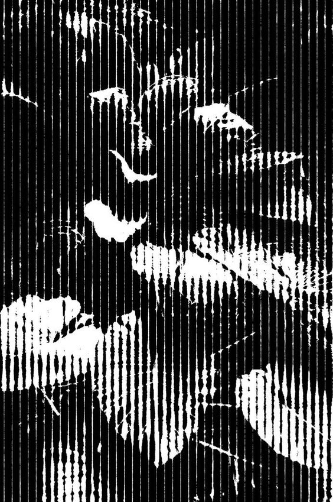
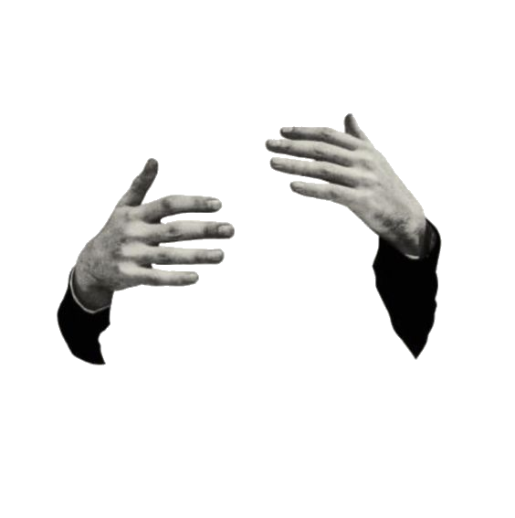
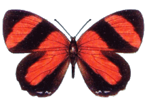
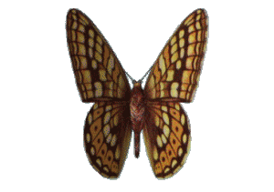

Youth is not a time of life; it is a state of mind; it is not a matter of rosy cheeks, red lips and supple knees.
Youth
means a temperamental predominance of courage over timidity, of the appetite for adventure over the loveof ease. This often exists in a man of 60 more than a boy of
20. Nobody grows old merely by a number of years. We grow old by deserting our ideals.Whether 60 or 16, there is in every human being’s heart the lure of wonders, the unfailing appetite for what’s next and the joy of the game of living. In the center of
your heart and my heart, there is a wireless station; so long as it receives messages of beauty, hope, courage and power from man and from the infinite, so long as you are young.Whether 60 or 16, there is in every human being’s heart the lure of wonders, the unfailing appetite
for what’s next and the joy of the game of living. In the center of your heart and my heart, there is a wireless station; so long as it receives messages of beauty, hope, courage and power from man and from the infinite, so long as you are young.Whether 60 or 16, there is in every human being’s heart the lure of wonders, the unfailing appetite for what’s next and the joy of the game of living. In the center of your heart and my heart, there is a wireless station;
so long as it receives messages of beauty, hope, courage and power from man and from the infinite, so long as you are young.Whether 60 or 16, there is in every human being’s heart the lure of wonders, the unfailing appetite for what’s next and the joy of the game of living. the center of your heart and my heart, there is a wireless station; so long as it receives messages of beauty, hope, courage and power from man and from the infinite, so long as you are young.Youth means a temperamental predominance of courage over timidity, of the appetite for adventure over the loveof ease. This often exists in a man of 60 more than a boy of 20. Nobody grows old merely by a number of years. We grow old by deserting our ideals.Whether 60 or 16, there is in every human being’s heart the lure of wonders, the unfailing appetite for what’s next and the joy of the game of living. In the center of your heart and my heart, there is a wireless station; so long as it receives messages of beauty, hope, courage and power from man and from the infinite, so long as you are young.Whether 60 or 16, there is in every human being’s heart the lure of wonders, the unfailing appetite for what’s next and the joy of the game of living. In the center of your heart and my heart, there is a wireless station; so long as it receives messages of beauty, hope, courage and power from man and from the infinite, so long as you are young. 60 or 16, there is in every human being’s heart the lure of wonders, the unfailing appetite for what’s next and the joy of the game of living. In the center of your heart and my heart, there is a wireless station; so long as it receives messages of beauty, hope, courage and power from man and from the infinite, so long as you are young.Whether 60 or 16, there is in every human being’s heart the lure of wonders, the unfailing appetite for what’s next and the joy of the game of living. In the center of your heart and my heart, there is a wireless station; so long as it receives messages of beauty, hope, courage and power from man and from the infinite, so long as you are young.Youth means a temperamental predominance of courage over timidity, of the appetite for adventure over the loveof ease. This often exists in a man of 60 more than a boy of 20. Nobody grows old merely by a number of years. We grow old by deserting our ideals.Whether 60 or 16, there is in every human being’s heart the lure of wonders, the unfailing appetite for what’s next and the joy of the game of living. In the center of your heart and my heart, there is a wireless station; so long as it receives messages of beauty, hope, courage and power from man and from the infinite, so long as you are young.Whether 60 or 16, there is in every human being’s heart the lure of wonders, the unfailing appetite for what’s next and the joy of the game of living. In the center of your heart and my heart, there is a wireless station; so long as it receives messages of beauty, hope, courage and power from man and from the infinite, so long as you are young.Whether 60 or 16, there is in every human being’s heart the lure of wonders, the unfailing appetite for what’s next and the joy of the game of living. In the center of your heart and my heart, there is a wireless station; so long as it receives messages of beauty, hope, courage and power from man and from the infinite, so long as you are young.Whether 60 or 16, there is in every human being’s heart the lure of wonders, the unfailing appetite for what’s next and the joy of the game of living. In the center of your heart and my heart, there is a wireless station; so long as it receives messages of beauty, hope, courage and power from man and from the infinite, so long as you are young.Youth means a temperamental predominance of courage over timidity, of the appetite for adventure over the loveof ease. This often exists in a man of 60 more than a boy of 20. Nobody grows old merely by a number of years. We grow old by deserting our ideals.Whether 60 or 16, there is in every human being’s heart the lure of wonders, the unfailing appetite for what’s next and the joy of the game of living. In the center of your heart and my heart, there is a wireless station; so long as it receives messages of beauty, hope, courage and power from man and from the infinite, so long as you are young.Whether 60 or 16, there is in every human being’s heart the lure of wonders, the unfailing appetite for what’s next and the joy of the game of living. In the center of your heart and my heart, there is a wireless station; so long as it receives messages of beauty, hope, courage and power from man and from the infinite, so long as you are young.Whether 60 or 16, there is in every human being’s heart the lure of wonders, the unfailing appetite for what’s next and the joy of the game of living. In the center of your heart and my heart, there is a wireless station; so long as it receives messages of beauty, hope, courage and power from man and from the infinite, so long as you are young.Whether 60 or 16, there is in every human being’s heart the lure of wonders, the unfailing appetite for what’s next and the joy of the game of living. In the center of your heart and my heart, there is a wireless station; so long as it receives messages of beauty, hope, courage and power from man and from the infinite, so long as you are young.
1234567890

>


